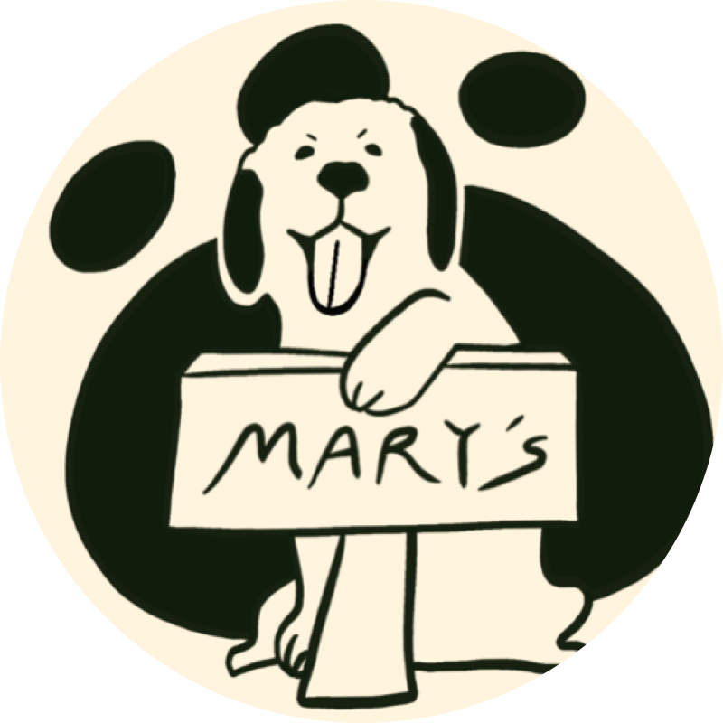
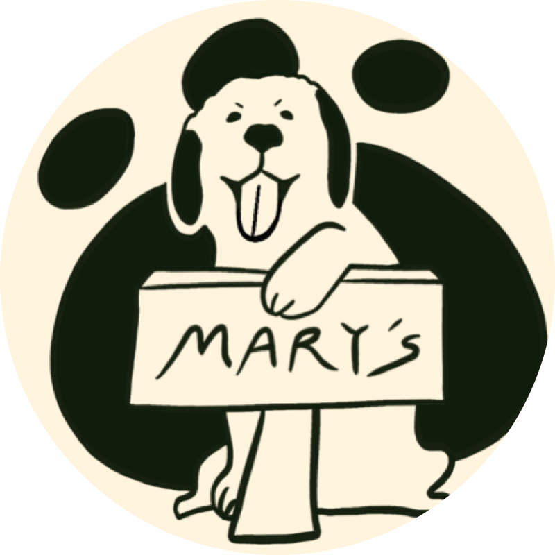
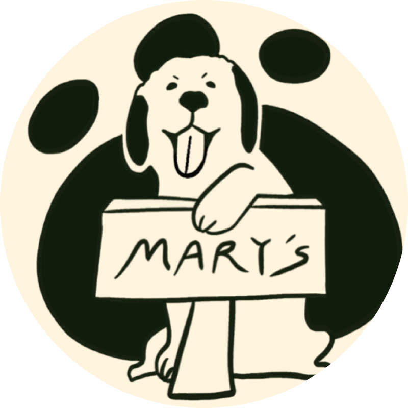

兩百字內的個人簡介
我是莊霈虹，畢業於彰化師範大學會計系，有六年會計及審計的工作經驗，現任職於臺中市西屯區公所會計室。工作之餘喜歡爬山、重訓、瑜珈等運動，享受在運動中自我成長的感覺。
我喜歡在工作上不斷地精進自已，即便是例行性的報表，我也會嘗試不同的勾稽方式來檢測報表並修正錯誤；我喜歡接觸不同領域的知識，曾經為了行銷飲品， 開始獨立尋找廠商、設計logo、拍攝商品並建立平台。從無到有的這些過程或許艱辛，但卻讓我獲得滿滿的成就感。
 

我喜歡在工作上不斷地精進自已，即便是例行性的報表，我也會嘗試不同的勾稽方式來檢測報表並修正錯誤；我喜歡接觸不同領域的知識，曾經為了行銷飲品， 開始獨立尋找廠商、設計logo、拍攝商品並建立平台。從無到有的這些過程或許艱辛，但卻讓我獲得滿滿的成就感。
